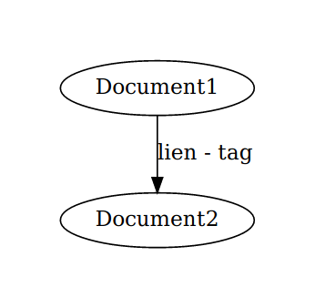
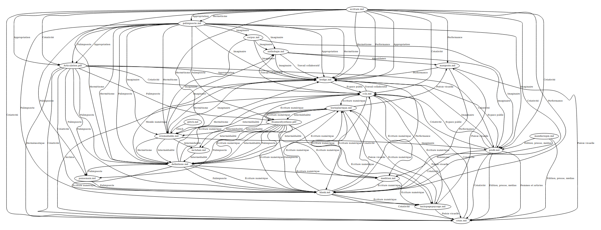
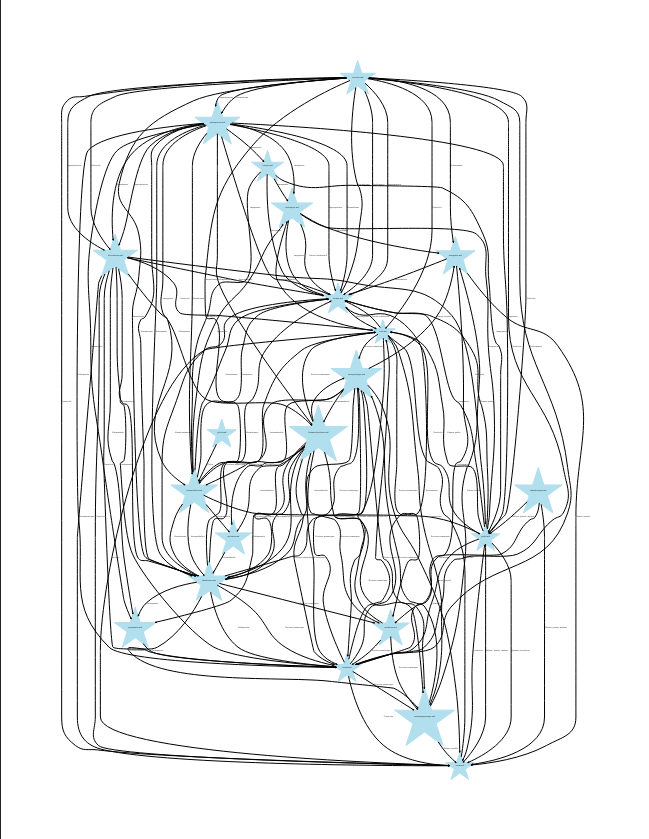

J’ai menti. #
J’ai quand même écrit, mais arrive un moment où, dans le mêlement des différents écritures, je constate que tout mon travail de préparation est en réalité un puzzle.
Autrement dit :
il faut ranger,
prendre de la distance,
avoir une vision sur toute les pièces qui composent cette image en cours.
Mais il n’est pas question de relire tout pour produire encore de nouveaux documents qui résumeraient puis se dillateraient dans le temps, qu’il faudrait alors relire pour produire de nouveaux condensés qu’on oublierait encore et encore.
Il faut établir un système clair, automatisé pour savoir comment se structure la recherche.
Modèle pour où est quoi sur quel sujet #
J’ai alors décidé de taguer mes documents de recherche.
Première piste : le système de tagging de git. Après un premier test pour m’apercevoir que ce système ne correspond pas à ma pratique, qu’il ne s’agit pas (ou pas encore) de marquer et documenter un historique de documents.
Il s’agit de comprendre les noeuds thématiques qui les lient, d’avoir un tableau d’ensemble des correspondances.
Deuxième piste : faire un graphique généré avec python1.
La fonction idéale :
[x] irait chercher les documents de mon [répertoire github](https://github.com/Mmellet/these)
[x] irait récupérer les tags de ces documents
[x] produirait un graph sur le modèle : bulle = document, lien = tag
Visualisation à partir de la librairie graphviz :

Pythonnage & Tags #
Toute la recherche,
les égarements,
les méthodes abandonnées
les SyntaxError
les "ça fonctionne mais je sais pas pourquoi"
These
ont été documentées dans un jupyter notebook :
Rendu(s) sur mur #
Premier rendu : #

parcourir dans une nouvelle page
Rendus suivants : #

parcourir dans une nouvelle page
Autres esthétiques de graph façon constellation de recherche : #

parcourir dans une nouvelle page
Le Graph du futur #
À faire :
- aller vraiment chercher les documents dans mon repository pour rendre éventuellement les bulles clicables
- informer davantage les bulles, avec des descriptions
- tenter d’autres graph selon d’autres modèles.
mais c’est un peu comme refaire le très beau Cosma en attendant qu’il soit disponible sur Linux que je vais tester car désormais compatible sur linux.
En écho deuxième expérience de Graph
-
Bientôt un post sur mon apprentissage du reptile. ↩︎